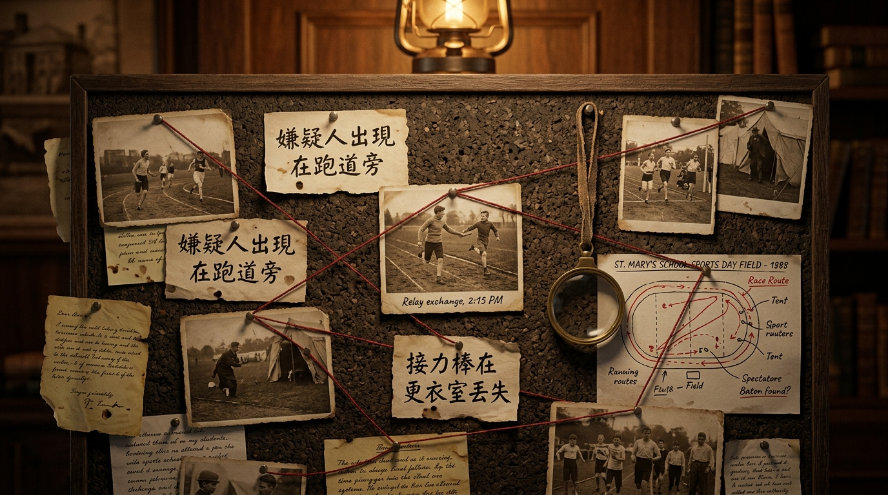

🔍 第一案：動機線索審查
評分標準一：【立意取材】—— 深入題旨，不落俗套，選取最具心靈震撼的真實細節。
標準一：立意取材

📌 案情線索牆：運動會滿分作文的關鍵，在於「選材的獨特性」與「由事件提煉出的深刻思考」。
【嫌犯原稿節錄】：今天天氣晴朗，萬里無雲，我們學校舉辦運動會。全校同學都到了，校長講了半小時話好無聊。大隊接力時我不小心在跑道上摔倒了，膝蓋破皮流血好痛，但我勇敢站起來繼續跑，大家都幫我拍手，最後我們班拿了第一名，這真是一次難忘的運動會。
🕵️ 偵探任務指示：全台灣有 80% 的學生寫運動會，都寫「跌倒摔傷又勇敢爬起來得第一名」，這是閱卷老師眼中的「俗套重災區」！請從下方 4 張線索卡片中，點擊揪出 2 個俗套陷阱，並選中 2 個具備高階立意的破案黃金線索！
線索 A：跌倒受傷再站起來
選材類型 01
「接棒時跌倒了，膝蓋流血很痛，但我為了班級榮譽勇敢爬起來衝刺，最後贏得第一名。」
❌ 【俗套凶嫌】：全台 8 成學生同質化取材！閱卷老師看到麻木，缺乏真實深刻的情感挖掘。
線索 B：時間點名流水帳
選材類型 02
「早上七點進校門，聽校長致詞，做健康操，中午吃便當，下午看拔河，四點放學很開心。」
❌ 【記帳凶嫌】：缺乏核心事件與主旨，平鋪直敘毫無波瀾，屬於最低等級的記敘文。
線索 C：孤軍到團隊的心境轉變
黃金立意 ★
「從一百米個人短跑的緊張與孤獨，到大隊接力接過帶有隊友手溫的接力棒——那一刻我懂得自己不再是一個人，而是全班心跳同頻的凝聚！」
⭐ 【破案關鍵】：對比鮮明！從「個體的孤立」昇華到「群體的同甘共苦」，立意深刻動人！
線索 D：看見聚光燈外的無名英雄
黃金立意 ★
「操場邊喊到喉嚨沙啞的啦啦隊、頂著烈日默默遞水與撿起號碼布的志工同學——看見榮耀背後那些不可或缺的微小齒輪。」
⭐ 【獨特視角】：視角從「跑者個人」拓展至「整個運動會生態與奉獻精神」，展現成熟的同理心與洞察力！